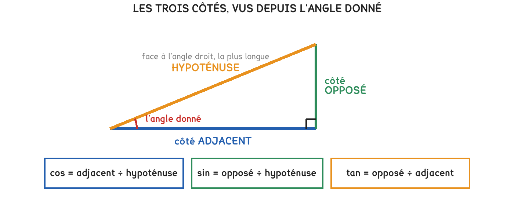

GE Géométrie — trigonométrie dans le triangle rectangleAU Automatismes
La méthode, en quatre temps
Je repère l’angle droit, puis l’angle donné. L’hypoténuse est le côté face à l’angle droit : toujours le plus long.
Face à l’angle donné : le côté opposé. Contre l’angle : le côté adjacent.
cos = adjacent ÷ hypoténuse · sin = opposé ÷ hypoténuse · tan = opposé ÷ adjacent.
La calculatrice doit être en DEG. Si cos 60 ne donne pas 0,5, elle ne l’est pas.

Les noms des côtés dépendent de l’angle qu’on regarde. Change-t-on d’angle dans le même triangle, l’opposé devient l’adjacent. Seule l’hypoténuse ne bouge jamais : elle est face à l’angle droit, et il n’y en a qu’un.
Une pièce d’hypoténuse 5 m, angle de 30°
Ce que je cherche
Le rapport
Le calcul
Résultat
le côté adjacent
cos
5 × cos 30
4,33 m
le côté opposé
sin
5 × sin 30
2,50 m
La calculatrice est restée en radians.cos 60 doit afficher 0,5. Si elle affiche −0,95, elle est en radians et tous vos résultats sont faux, y compris ceux qui paraissent plausibles. C’est le premier geste de la fiche 08, et il vaut ici plus qu’ailleurs.
Pour aller plus loin
Comment retenir lequel employerPour aller plus loin›
Les trois rapports s’écrivent dans le même ordre à chaque fois : ce qu’on cherche divisé par ce qu’on connaît, en prenant les côtés dans le bon rôle.
Une seule question à se poser : l’hypoténuse est-elle dans le calcul ?
Oui, et je veux le côté contre l’angle → cos. Oui, et je veux le côté face à l’angle → sin. Non, les deux autres côtés seulement → tan.
Et un contrôle qui ne trompe pas : le côté opposé et le côté adjacent sont toujours plus courts que l’hypoténuse. Un résultat plus grand qu’elle est faux.
Je m’entraîne
Les mêmes séries que sur la feuille. On remplit chaque case, puis on vérifie la série entière d’un coup.
Série · GE
Série 1, à la calculatrice, au centième
cos 30
sin 30
tan 45
cos 60
Vérifiez le mode DEG avant de commencer. En radians, cos 60 affiche un nombre négatif.
Série · GE
Série 2, quel rapport employer
je connais l’hypoténuse, je cherche l’adjacent
je connais l’hypoténuse, je cherche l’opposé
je connais l’adjacent, je cherche l’opposé
L’hypoténuse est au dénominateur du cosinus et du sinus. La tangente, elle, ne la voit jamais.
Série · GE
Série 3, calculer un côté, hypoténuse 10 m et angle 40°
le côté opposé, 10 × sin 40
le côté adjacent, 10 × cos 40
Les deux résultats sont plus courts que l’hypoténuse. Si l’un dépasse 10 m, la machine est en radians.
Le quiz
L’hypoténuse est le côté : face à l’angle droit | face à l’angle donné
Je connais l’hypoténuse et je cherche le côté opposé : sin | cos | tan
cos 60 doit afficher : 0,5 | 60 | −0,95
Un cosinus peut valoir 1,4 : oui | non
À vous
Une échelle de 6 m est posée contre un mur. Elle fait un angle de 70° avec le sol.
Exercice · GE
La hauteur atteinte
À quelle hauteur l’échelle touche-t-elle le mur ? Donnez le résultat au centième.
La hauteur est le côté face à l’angle donné. Vérifiez le mode DEG avant de taper.
Exercice · GE
Le pied de l’échelle
À quelle distance du mur le pied de l’échelle est-il posé ? Au centième.
Cette distance est le côté contre l’angle donné, au sol.
Exercice · CN
La règle du quart
La règle de sécurité veut que le pied soit écarté d’environ un quart de la longueur de l’échelle. Combien cela fait-il ici ?
Un quart de 6 m. C’est un calcul de tête, pas de calculatrice.
Exercice · GE
L’échelle est-elle bien posée
Comparez la distance calculée à la règle du quart, puis dites si l’échelle est posée correctement et ce qu’il faudrait faire.
Laquelle des deux distances est la plus grande ? Une échelle trop écartée glisse.
J’ai rappelé la distance obtenue par le calcul
J’ai rappelé la distance voulue par la règle du quart
J’ai dit que le pied est trop écarté, donc l’échelle trop couchée
J’ai dit qu’il faut redresser l’échelle, donc rapprocher le pied du mur
Pour les plus courageux
Deux questions de plus, sans méthode indiquée.
Exercice · GE
L’angle correct
Pour respecter exactement la règle du quart, quel angle l’échelle doit-elle faire avec le sol ? Donnez le résultat au degré. La calculatrice a une touche qui défait le cosinus.
Vous connaissez l’adjacent voulu et l’hypoténuse. Le rapport des deux est un cosinus : reste à retrouver l’angle.
Exercice · GE
Plus droite ou plus couchée
À 76°, l’échelle monte-t-elle plus haut ou moins haut qu’à 70° ? Calculez les deux hauteurs, puis expliquez pourquoi la règle du quart ne fait pas perdre de hauteur.
Le côté opposé, pour les deux angles, sur la même hypoténuse de 6 m.
J’ai calculé la hauteur atteinte à 70°
J’ai calculé la hauteur atteinte à 76°
J’ai dit que l’échelle redressée monte plus haut
J’ai dit que la règle de sécurité ne coûte donc rien en portée
Fiche de consolidation. Aucun corrigé ; rien n'est enregistré, rien n'est noté.